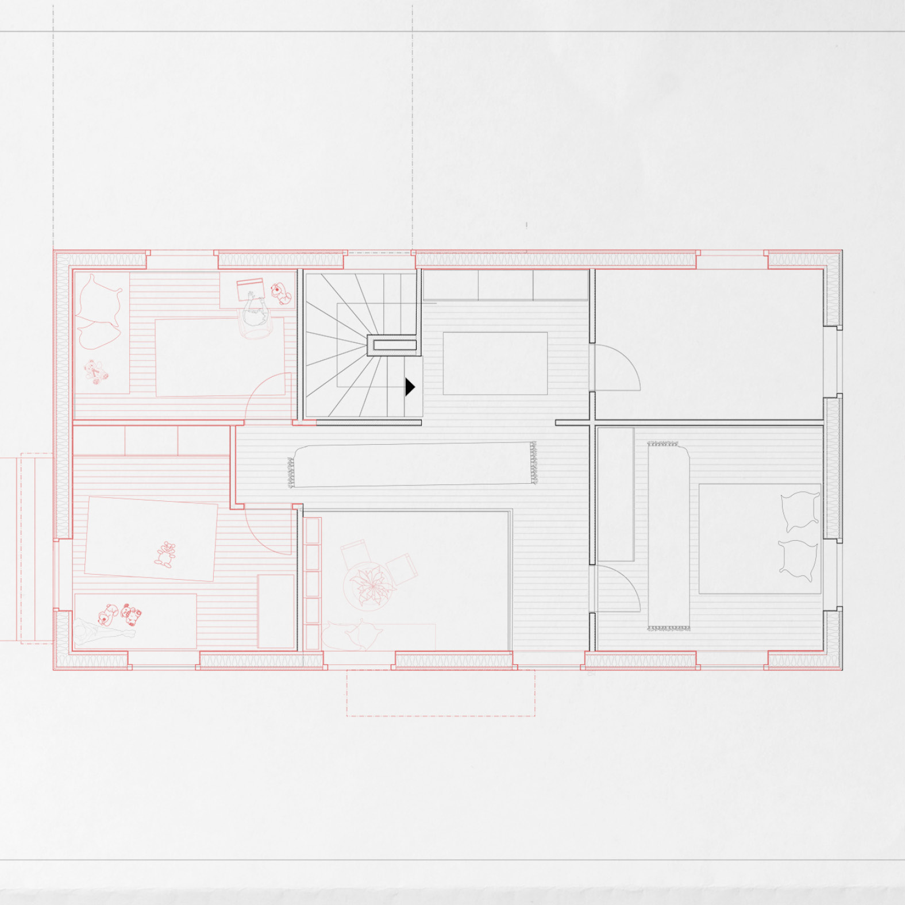

studio av·a arbeider med transformasjon, restaurering og gjenbruk av eksisterende bygninger. Arbeidet springer ut fra Kulturarv, Transformation og Restaurering ved Det Kongelige Akademi og erfaring fra prosjektering, byggesak og byggeledelse i eksisterende bygningsmasse.
Fokuset ligger på hvordan bygninger bærer spor av tid, bruk og konstruksjon – og hvordan nøkterne, presise inngrep kan forlenge livet til det som allerede finnes, fremfor å starte på nytt.
Prosjekter
-
 Axonometriske illustrationerSuburban City Center – RågsvedReinterpreting the PeripheryTransformasjon av et svensk etterkrigsbysenter. Et studie i modernismens falmede idealer, sosial og økonomisk sårbarhet, og den oversette hverdagsarkitekturen som kritisk speil for samtiden.Autocad & Rhinocerous 7, 3D-scanner, Vray & Adobe-suite
Axonometriske illustrationerSuburban City Center – RågsvedReinterpreting the PeripheryTransformasjon av et svensk etterkrigsbysenter. Et studie i modernismens falmede idealer, sosial og økonomisk sårbarhet, og den oversette hverdagsarkitekturen som kritisk speil for samtiden.Autocad & Rhinocerous 7, 3D-scanner, Vray & Adobe-suite -
 Exterior visualisationSkjønsbergvegen 14Shifts in StructureTransformasjon av et etterkrigshus på Hamar. Små forskyvninger i plan og konstruksjon åpner for nye romlige sammenhenger, samtidig som husets opprinnelige karakter og materialitet videreføres.BIM/Archicad, Rhinocerous 7, Enscape, Vray & Adobe-suite
Exterior visualisationSkjønsbergvegen 14Shifts in StructureTransformasjon av et etterkrigshus på Hamar. Små forskyvninger i plan og konstruksjon åpner for nye romlige sammenhenger, samtidig som husets opprinnelige karakter og materialitet videreføres.BIM/Archicad, Rhinocerous 7, Enscape, Vray & Adobe-suite -

Fine carpentry, woodwork and constructionRemaking HaubergRoyal Academy1:1-arbeid med konstruksjon og materialkultur. Prosjektet undersøker hvordan detaljert håndverk kan belyse bygningens logikk, ombrukspotensial og innebygde kunnskap.Fine carpentry, woodwork and construction -
 Material PracticeDæmpegård SkovriddergårdRestaurering av historisk bindingsverksbygning med fokus på konstruksjonens materialitet og logikk. Prosjektet undersøker hvordan lag av reparasjoner kan forstås og videreutvikles som del av helheten.Rhinocerous 7 & Autocad, Enscape, Vray & Adobe-suite
Material PracticeDæmpegård SkovriddergårdRestaurering av historisk bindingsverksbygning med fokus på konstruksjonens materialitet og logikk. Prosjektet undersøker hvordan lag av reparasjoner kan forstås og videreutvikles som del av helheten.Rhinocerous 7 & Autocad, Enscape, Vray & Adobe-suite -
 Visualisering af det udvendigeRecasting the VoidØsterbrogade 146Et additivt prosjekt som utforsker byens negative rom som bærere av dens essens, og hvordan nye boliglag kan innpasses i eksisterende strukturer uten å viske ut det som allerede er der.Rhinocerous 7, Autocad & Adobe-suite
Visualisering af det udvendigeRecasting the VoidØsterbrogade 146Et additivt prosjekt som utforsker byens negative rom som bærere av dens essens, og hvordan nye boliglag kan innpasses i eksisterende strukturer uten å viske ut det som allerede er der.Rhinocerous 7, Autocad & Adobe-suite
Tilnærming
Arbeidet tar utgangspunkt i en enkel tanke: å bruke det som allerede finnes, både fysisk og kunnskapsmessig, før man legger til noe nytt. Det innebærer en langsom lesning av sted, bygning og materiale – og en nøkternhet i grepet.
- Transformasjon og rehabilitering av boliger og næringsbygg
- Gjenbruk av materialer og strategier for forlengelse av levetid
- Etterkrigsarkitektur og velferdsbygg som kulturarv
- Oppmåling, verdianalyse og dokumentasjon
- Tett dialog med håndverkere, byggherrer og myndigheter
- Prosjektering i Revit og Archicad
Faglig arbeid
-
Suburban City Center – Rågsved. Reinterpreting the PeripheryEn studie av transformasjon i et svensk etterkrigsbysenter, med fokus på sosial sårbarhet, materialitet og hvordan eksisterende strukturer kan fungere som ramme for nye former for fellesskap.
-
Metoder for verdianalyse i eksisterende bygningsmasseVidereføring av arbeidet med å forstå hvordan bevaringsverdi, brukskvalitet og klimahensyn kan vektes sammen i tidligfase. Målet er å utvikle praktiske verktøy som kan brukes i små og mellomstore prosjekter.
-
Praksis som kunnskapsfeltLangsiktig interesse for hvordan arkitektpraksis kan kobles til kritisk og akademisk refleksjon – særlig innen transformasjon, etterkrigsarkitektur og sirkulær materialbruk.
Kontakt
Adresse
Frejasgade 2, 3.tv
2200 København N
Brennbakkvegen 19A
2318 Hamar
Tjenester
- Transformasjon og rehabilitering
- Restaurering i bevaringsverdige miljøer
- Oppmåling og digital modellering
- Byggesøknader og myndighetsdialog
- Visualisering og tidligfasestudier